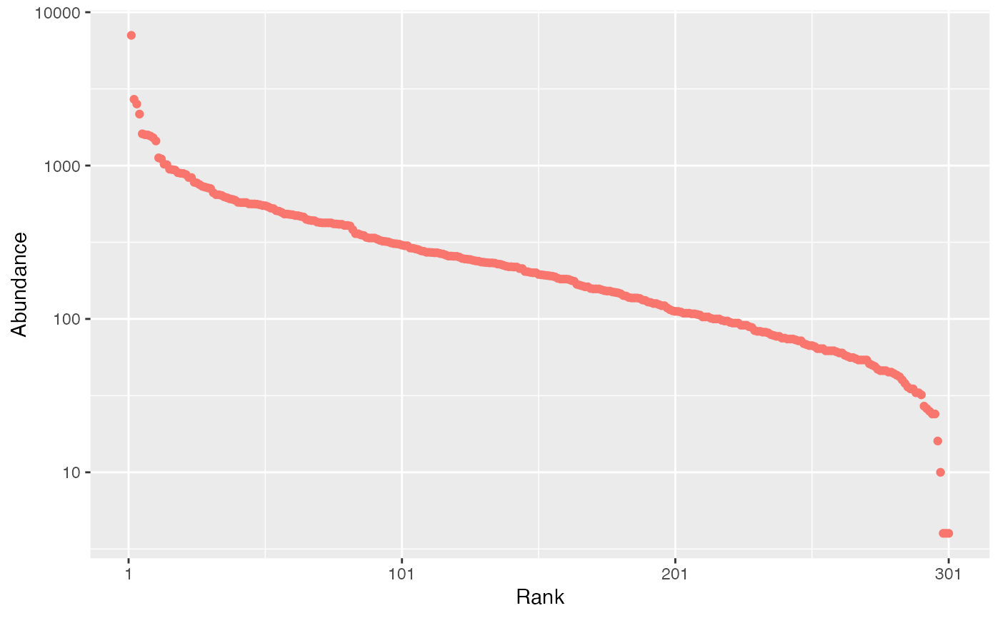

Draw random communities according to a probability distribution.
rcommunity(
n,
size = sum(abd),
prob = NULL,
abd = NULL,
bootstrap = c("Chao2015", "Marcon2012", "Chao2013"),
species_number = 300,
distribution = c("lnorm", "lseries", "geom", "bstick"),
sd_lnorm = 1,
prob_geom = 0.1,
alpha_lseries = 40,
coverage_estimator = c("ZhangHuang", "Chao", "Turing", "Good"),
check_arguments = TRUE
)The number of communities to draw.
The number of individuals to draw in each community.
A numeric vector containing probabilities.
A numeric vector containing abundances.
The method used to obtain the probabilities to generate bootstrapped communities from observed abundances. If "Marcon2012", the probabilities are simply the abundances divided by the total number of individuals (Marcon et al. 2012) . If "Chao2013" or "Chao2015" (by default), a more sophisticated approach is used (see as_probabilities) followingChao et al. (2013) or Chao and Jost (2015) .
The number of species.
The distribution of species abundances. May be "lnorm" (log-normal), "lseries" (log-series), "geom" (geometric) or "bstick" (broken stick).
The simulated log-normal distribution standard deviation. This is the standard deviation on the log scale.
The proportion of ressources taken by successive species of the geometric distribution.
Fisher's alpha in the log-series distribution.
An estimator of sample coverage used by coverage.
If TRUE, the function arguments are verified.
Should be set to FALSE to save time when the arguments have been checked elsewhere.
An object of class abundances.
Communities of fixed size are drawn in a multinomial distribution according
to the distribution of probabilities provided by prob.
An abundance vector abd may be used instead of probabilities,
then size is by default the total number of individuals in the vector.
Random communities can be built by drawing in a multinomial law following
Marcon et al. (2012)
, or trying to estimate the
distribution of the actual community with as_probabilities.
If bootstrap is "Chao2013", the distribution is estimated by a single
parameter model and unobserved species are given equal probabilities.
If bootstrap is "Chao2015", a two-parameter model is used and unobserved
species follow a geometric distribution.
Alternatively, the probabilities may be drawn following a classical
distribution: either lognormal ("lnorm") (Preston 1948)
with given standard deviation (sd_lnorm; note that the mean is actually
a normalizing constant. Its values is set equal to 0 for the simulation of
the normal distribution of unnormalized log-abundances), log-series ("lseries")
(Fisher et al. 1943)
with parameter alpha_lseries, geometric
("geom") one (Motomura 1932)
with parameter prob_geom,
or broken stick ("bstick") (MacArthur 1957)
.
The number of simulated species is fixed by species_number, except for
"lseries" where it is obtained from alpha_lseries and size:
\(S=\alpha \ln(1 + size / \alpha)\).
Log-normal, log-series and broken-stick distributions are stochastic. The geometric distribution is completely determined by its parameters.
# Generate a community made of 100000 individuals among 300 species and fit it
abundances <- rcommunity(n = 1, size = 1E5,
species_number = 300, distribution = "lnorm")
autoplot(abundances)
